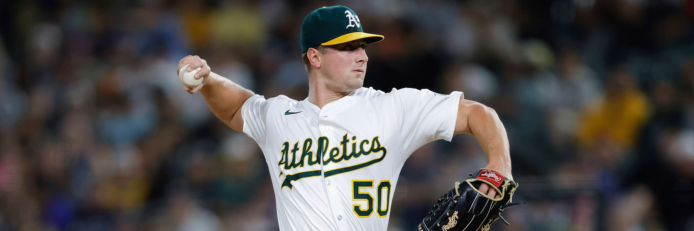

Fifty One Days Since His Last Pitch. The Yankees Are Priced At -109.
This was the board as of 2026-08-18. Any price shown below is the price that was available at that time, not a current quote. The original analysis is unchanged; present-tense wording has been corrected so nothing reads as live.
Carlos Rodón last threw a pitch in a major league game on June 28. New York activated him off the fifteen day injured list this morning, wrote him into a road start at Camden Yards, and the market answered by making the Yankees a 52 percent favorite.
That is the cheapest price on that night's nine play card, and it sits on the best run prevention team in baseball. New York has allowed 466 runs behind a 3.26 ERA. Both figures are the lowest of any staff in the sport. The Yankees are 38-28 away from the Bronx, and Baltimore is 61-64.
Three games on this fifteen game board have an incomplete pitching picture. Seven of the card's fifteen units are in them. That is the shape of the whole thing.
| Play | Line | Odds | Stake | Game |
|---|---|---|---|---|
| Miami Marlins team total under | Under 3.5 | -142 | 1.5 units | MIA at PHI, 6:40 PM ET |
| Padres and Mets under | Under 8.5 | -110 | 1.0 unit | SD at NYM, 7:10 PM ET |
| New York Yankees moneyline | Moneyline | -109 | 1.0 unit | NYY at BAL, 6:35 PM ET |
| Blue Jays and Rays under | Under 7.5 | -115 | 1.5 units | TOR at TB, 6:40 PM ET |
| Kansas City Royals moneyline | Moneyline | -156 | 2.5 units | ATH at KC, 7:40 PM ET |
| Athletics and Royals over | Over 9 | -110 | 1.0 unit | ATH at KC, 7:40 PM ET |
| Boston Red Sox moneyline | Moneyline | -162 | 2.0 units | ARI at BOS, 7:10 PM ET |
| Mariners and Brewers under | Under 7.5 | -105 | 2.0 units | SEA at MIL, 7:40 PM ET |
| Chicago Cubs moneyline | Moneyline | -169 | 2.5 units | CWS at CHC, 8:05 PM ET |
Fifteen units of risk to win 11.32. The nine positions are logged on the BetLegend record at TrustMyRecord as tickets TMR-0004400 through TMR-0004408 at those exact prices. Five of the nine are bets on a run environment rather than a winner, which is a heavier tilt toward totals than this card usually carries.
Rodón's 2026 is nine starts long. He made four in May and five in June, threw 46.1 innings, and finished with a 3.30 ERA, a 1.25 WHIP and a .195 opponent average. New York placed him on the fifteen day injured list on July 3, retroactive to June 30, with left elbow inflammation. He went to Scranton and Wilkes-Barre on a rehab assignment on August 8, moved to Somerset on August 13, and came off the list that day.
The number underneath all of that is 26. Rodón walked 26 of the 194 hitters he faced before the elbow, a 13.4 percent rate, and a pitcher returning from seven weeks off does not usually improve his command in week one. Whatever New York gets that night, it is unlikely to be length.
Which is the actual bet. The Yankees are laying a hair over even money in a game their bullpen will probably have to finish, and that bullpen belongs to the staff with the fewest runs allowed in baseball. Shane Baz answers for Baltimore at 4-12 with a 4.00 ERA, a 1.36 WHIP and a .268 opponent average across 24 starts, in front of an Orioles staff carrying a 4.24 ERA and 596 runs allowed. The gap between the two pitching operations is 130 runs over five months. The gap between the two prices is nine cents.
Kansas City is 52-74 and laying -156. The Chicago Cubs are 73-53 and laying -169. Twenty one wins of record separate those clubs. Thirteen cents separate their moneylines, which works out to 60.9 percent against 62.8 percent at the counter.
Neither opponent had a starting pitcher announced when this card was posted. The Athletics named Jack Perkins in Kansas City, but the Royals had not named their own arm. The White Sox had not named theirs at Wrigley. Both of the card's largest positions, 2.5 units each, are being laid into that fog.
What the price is really buying in Missouri is a home and road split. Kansas City is 30-30 at Kauffman Stadium and 22-44 everywhere else, a 22 game swing that is one of the widest in the league. Oakland is 26-36 on the road. In Chicago the split runs the other direction and points the same way: the White Sox are 37-24 in their own park and 28-35 outside it, and that night they are outside it. Kevin Gausman takes the ball for the Cubs with a 4.53 ERA and a 1.27 WHIP across 25 starts, which is not the reason for -169. The reason is 652 runs, the second highest total in the sport.

Jack Perkins has allowed 18 runs across his last three starts, including 12 hits in five innings at Tampa Bay on August 12.
Four of the five total bets on this card take the under. The one that does not is Athletics and Royals over 9, and it is stapled to the same game as the biggest moneyline position on the board.
Oakland has allowed 723 runs. That is the most in baseball. Its 195 home runs allowed are also the most in baseball, and its 5.49 team ERA is second worst behind a Colorado staff that pitches a mile above sea level. Kansas City sits third worst at 4.78 with 629 runs allowed and 464 walks. Put the two staffs in one building and you have 1,352 runs of surrendered offense sharing a scoreboard.
Perkins is the front end of it. His season line reads 7.27 ERA, 1.52 WHIP, 81.2 innings, 16 home runs allowed and a .277 opponent average, spread across 11 starts in 29 appearances. The last three turns have been worse than the season. Five and a third innings and six earned runs with three home runs against Detroit on August 1. Three innings and five earned against Boston on August 7. Then twelve hits and seven runs in five innings at Tampa Bay on August 12, on 97 pitches.
The honest tension in that play is the lineups. Kansas City has scored 522 runs, eighth fewest in the majors. Oakland has scored 545, eleventh fewest. Nobody is buying this over because of the bats.
Seattle has scored 489 runs, the fewest of any team in baseball. Toronto has scored 492, the second fewest. Both are on that night's card, and both are on the under.
Take the Milwaukee game first, because it carries two units at -105 and it is the best pitching matchup on the slate. Bryce Miller brings a 0.99 WHIP into American Family Field with 16 walks in 331 batters faced. Kyle Harrison answers with a 2.99 ERA and 114 strikeouts in 93.1 innings. Behind Harrison is a Brewers staff at 3.46 with 472 runs allowed, second and third best in the league respectively, in a park where Milwaukee is 41-22.
Tampa Bay is the other one. Nick Martinez has a 2.74 ERA and a 1.09 WHIP, and he has walked 20 hitters in 552 batters faced, a 3.6 percent rate that sits near the floor of the sport. His most recent start was a nine inning complete game on 101 pitches against these same Athletics on August 11. José Soriano comes back the other way with a 3.16 ERA and a .217 opponent average, and the Rays are 42-21 at home. Under 7.5 at -115 needs 53.5 percent.
Padres and Mets under 8.5 is the quietest position on the card at one unit. San Diego has scored 536 runs and New York 525, tenth and ninth fewest. Robbie Ray carries a 3.28 ERA but also 65 walks in 554 batters faced, and Zac Thornton has a 2.78 ERA through eight starts. The Mets have won four straight and are 7-3 in their last ten, which is the part of this that does not fit.
Zack Wheeler is the reason the Marlins team total under 3.5 costs -142. He has a 2.89 ERA, a 1.00 WHIP, 137 strikeouts against 29 walks in 115.1 innings, and hitters are batting .205 against him. Miami is 26-37 on the road. Under 3.5 runs at that price needs 58.7 percent to clear.
Now the other half. On July 27 Wheeler faced this same Miami lineup and gave up six hits, two home runs and five earned runs in three innings on 68 pitches. Across his last three starts he has allowed nine runs in 12.1 innings, including a 116 pitch outing against Toronto on August 7 in which he walked five. The season line is elite. The recent form is not, and the one game in that stretch against the exact opponent on that night's ticket was his worst of the year.
Boston at -162 is the position with the least support underneath it. The Red Sox are 30-31 at Fenway Park and 3-7 in their last ten, and Arizona arrives at 66-60, one game better in the standings than the team laying almost two to one. Ranger Suarez has been excellent, a 3.25 ERA with six home runs allowed in 108 innings, and Merrill Kelly has not, a 5.11 ERA with 25 home runs allowed in 125. That pitching gap is real. Laying 61.8 percent on a club playing .492 baseball in its own park is still a lot to ask of it.
The Cubs number has its own hole. Chicago's staff has allowed 191 home runs, second most in baseball, and this game is at Wrigley Field against a White Sox lineup that has hit 166 of them. A -169 favorite loses that game on two swings.
The Kansas City pair can also cannibalize itself. If the unnamed Royals starter turns in five clean innings, the moneyline lives and the over dies, and the 2.5 units win while the one unit loses. Correlation cuts both ways when you buy a side and a total in the same building.
Above all of it sits the information problem. Seven of fifteen units are committed to games where one pitcher had not been named or had not thrown a competitive pitch in seven weeks. That is a defensible way to attack a board, because uncertainty is what creates soft prices in the first place. It is also the reason this card can go 6-3 and still lose money if the wrong three come in.
Fact manifest
- Fifteen game schedule for August 18, 2026 with probable pitchers, venues and first pitch times; Kansas City and the Chicago White Sox listed without a named starter at the time of writing, then listed as Daniel Lynch IV and Bryan Hudson on a later pull the same session
- MLB Stats API schedule endpoint for 2026-08-18 hydrated with probablePitcher, team and venue, pulled twice this session
- Team records and splits: Yankees 69-55 and 38-28 on the road, Orioles 61-64, Royals 52-74 with 30-30 at home and 22-44 away, Athletics 49-76 and 26-36 away, Cubs 73-53, White Sox 65-59 with 37-24 at home and 28-35 away, Red Sox 67-58 with 30-31 at home and 3-7 in the last ten, Diamondbacks 66-60, Rays 75-49 with 42-21 at home, Brewers 77-48 with 41-22 at home, Mets 57-69 with 7-3 in the last ten and four straight wins, Marlins 64-62 and 26-37 away
- MLB Stats API standings endpoint for 2026 with split records, dated 2026-08-18, pulled this session
- Carlos Rodón 2026: 3.30 ERA, 1.25 WHIP, 46.1 IP, 9 starts, 52 strikeouts, 26 walks in 194 batters faced, .195 opponent average; last appearance June 28 against Boston; four May starts and five June starts and none since
- MLB Stats API season pitching split, month split and full game log for player 607074, pulled this session
- Rodón placed on the 15-day injured list July 3 retroactive to June 30 with left elbow inflammation, rehab assignments to Scranton and Wilkes-Barre on August 8 and Somerset on August 13, activated from the injured list August 18
- MLB Stats API transactions endpoint for player 607074, June 1 through August 18 2026, pulled this session; independently consistent with the game log gap recorded above
- Shane Baz 2026: 4-12, 4.00 ERA, 1.36 WHIP, 139.1 IP, 24 starts, 122 strikeouts, 47 walks, .268 opponent average
- MLB Stats API season pitching split for player 669358, pulled this session
- Jack Perkins 2026: 7.27 ERA, 1.52 WHIP, 81.2 IP, 11 starts in 29 appearances, 94 strikeouts, 32 walks, 16 home runs allowed, .277 opponent average; starts of 5.1 IP and 6 ER with 3 home runs on August 1, 3.0 IP and 5 ER on August 7, and 5.0 IP with 12 hits and 7 runs on 97 pitches on August 12
- MLB Stats API season pitching split and game log for player 678022, pulled this session
- Zack Wheeler 2026: 2.89 ERA, 1.00 WHIP, 115.1 IP, 20 starts, 137 strikeouts, 29 walks, .205 opponent average; 3.0 IP with 6 hits, 2 home runs and 5 earned runs against Miami on July 27; 116 pitches with 5 walks against Toronto on August 7; 9 runs allowed across the last three starts covering 12.1 innings
- MLB Stats API season pitching split and game log for player 554430, pulled this session
- Bryce Miller 0.99 WHIP with 16 walks in 331 batters faced; Kyle Harrison 2.99 ERA with 114 strikeouts in 93.1 innings; Nick Martinez 2.74 ERA, 1.09 WHIP, 20 walks in 552 batters faced and a 9 inning complete game on 101 pitches against the Athletics on August 11; José Soriano 3.16 ERA and .217 opponent average; Robbie Ray 3.28 ERA with 65 walks in 554 batters faced; Zac Thornton 2.78 ERA in 8 starts; Merrill Kelly 5.11 ERA with 25 home runs allowed in 125 innings; Ranger Suarez 3.25 ERA with 6 home runs allowed in 108 innings; Kevin Gausman 4.53 ERA and 1.27 WHIP in 25 starts
- MLB Stats API season pitching splits and game logs for players 682243, 690986, 607259, 667755, 592662, 804267, 518876, 624133 and 592332, pulled this session
- Team pitching 2026: Yankees 3.26 ERA and 466 runs allowed, both lowest in the majors; Brewers 3.46 ERA and 472 runs allowed; Red Sox 3.50 ERA and 469 runs allowed; Rays 3.78; Orioles 4.24 ERA and 596 runs allowed; Cubs 4.16 ERA and 191 home runs allowed, second most; Diamondbacks 4.13; Royals 4.78 ERA, 629 runs allowed and 464 walks; Athletics 5.49 ERA, 723 runs allowed and 195 home runs allowed, both the most in the majors; Colorado 5.51 ERA
- MLB Stats API season team pitching totals for all 30 clubs, 2026 regular season, pulled this session
- Team hitting 2026: Seattle 489 runs, fewest in the majors; Toronto 492, second fewest; Kansas City 522, eighth fewest; Mets 525, ninth fewest; Padres 536, tenth fewest; Athletics 545, eleventh fewest; Cubs 652, second most; White Sox 599 runs and 166 home runs; Marlins 555
- MLB Stats API season team hitting totals for all 30 clubs, 2026 regular season, pulled this session
- Break even percentages of 52.2, 53.5, 58.7, 60.9, 61.8 and 62.8, and the 11.32 unit return on 15 units of risk
- Direct arithmetic conversion of the American prices listed in the card table above
- Jack Perkins photograph
- MLB action photograph for player 678022, retrieved this session; the jersey number 50 in the frame matches the number listed on his MLB Stats API player record, and he is the announced Athletics starter that night
Nine plays, their odds and their stakes: this is the author's own posted card. They record positions taken, not a price feed, and books may show different numbers at the time you read this.
What is not checked, and cannot be:
- No ticket count or money percentage splits were pulled for any of the nine games, and none are quoted here. Nothing on this page describes where public or professional money actually went.
- No line movement history was pulled. Every price shown is the card's entry price only, and no claim is made about how any number opened or moved.
- Lineups had not posted when this was written. Late scratches, bullpen availability and weather all postdate the page.
- The Kansas City and Chicago White Sox starters were unannounced when this card was posted and when this page was written. They were announced afterward, and the update note above records both names and the time they were confirmed.
- Rodón's activation is documented through the league transaction log. His pitch count limit that night is not published anywhere and is not estimated here.
- Break even percentages are straight conversions of the listed American prices and do not account for any book's hold.
Related reading: MLB betting guide: totals, pitching and park factors
Monday's piece: forty nine games under .500 between them, and one was laying -175 · Latest analysis · Full archive